Pneumonia Detection Application {Using ResNet}
I’m excited to share my recent project! I built a 𝐂𝐡𝐞𝐬𝐭 𝐗-𝐫𝐚𝐲 𝐏𝐧𝐞𝐮𝐦𝐨𝐧𝐢𝐚 𝐃𝐞𝐭𝐞𝐜𝐭𝐢𝐨𝐧 𝐀𝐩𝐩 using Flask and a ResNet CNN model. The app allows users to upload a chest X-ray, and it predicts whether pneumonia is present or not. 𝐖𝐨𝐫𝐤𝐢𝐧𝐠 𝐨𝐧 𝐭𝐡𝐢𝐬 𝐠𝐚𝐯𝐞 𝐦𝐞 𝐡𝐚𝐧𝐝𝐬-𝐨𝐧 𝐞𝐱𝐩𝐞𝐫𝐢𝐞𝐧𝐜𝐞 𝐢𝐧 𝐝𝐞𝐞𝐩 𝐥𝐞𝐚𝐫𝐧𝐢𝐧𝐠, 𝐦𝐞𝐝𝐢𝐜𝐚𝐥 𝐢𝐦𝐚𝐠𝐞 𝐚𝐧𝐚𝐥𝐲𝐬𝐢𝐬, 𝐚𝐧𝐝 𝐛𝐮𝐢𝐥𝐝𝐢𝐧𝐠 𝐰𝐞𝐛 𝐚𝐩𝐩𝐬....
Github Link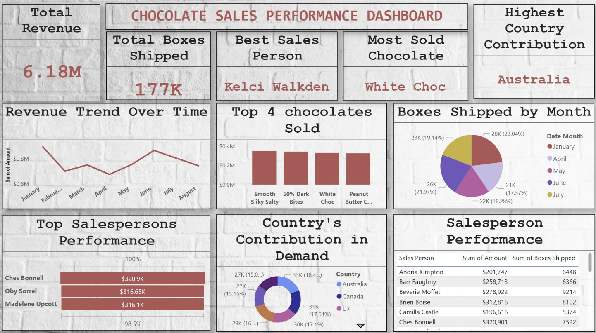
Power BI Dashboard - Chocolate Sales
🚀 𝗗𝗮𝘀𝗵𝗯𝗼𝗮𝗿𝗱 𝗖𝗿𝗲𝗮𝘁𝗶𝗼𝗻 𝘄𝗶𝘁𝗵 𝗠𝗶𝗻𝗶𝗺𝗮𝗹 𝗗𝗮𝘁𝗮? 𝗖𝗵𝗮𝗹𝗹𝗲𝗻𝗴𝗲 𝗔𝗰𝗰𝗲𝗽𝘁𝗲𝗱! I’m excited to share a Power BI dashboard I recently created that showcases chocolate sales performance — built using just five columns of data! 📊🍫 Despite the limited dataset, I was able to extract powerful insights, including: ✅ Total revenue & boxes shipped
Github LinkEmergency Communicator {Using CNN}
“SIGN SPEAK”: Connecting the deaf and hard of hearing with the world through the Gesture Recognition. The main purpose of our work is to employ the superior deep learning approaches for enhancing a highly effective and precise sign language interpreting model that will translate sign language to text and speech....
Github Link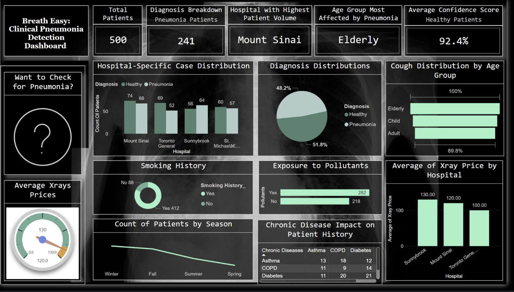
Power BI Dashboard - 𝗖𝗹𝗶𝗻𝗶𝗰𝗮𝗹 𝗣𝗻𝗲𝘂𝗺𝗼𝗻𝗶𝗮 𝗗𝗲𝘁𝗲𝗰𝘁𝗶𝗼𝗻
Excited to share the Power BI dashboard I created as part of our healthcare analytics project 𝗞𝗲𝘆 𝗜𝗻𝘀𝗶𝗴𝗵𝘁𝘀: 1) 51.8% patients diagnosed with pneumonia 2) Smoking & pollutant exposure are major contributors.....
Github Link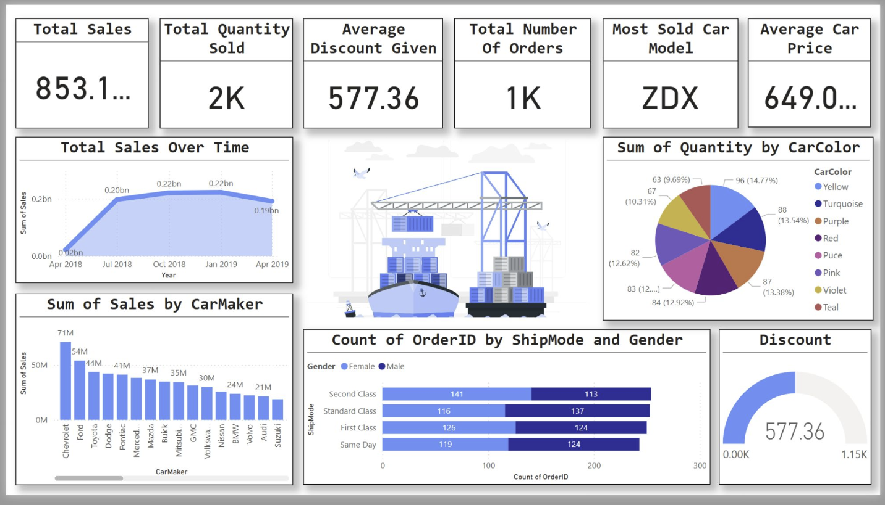
Power BI Dashboard - Auto Industry
🚗 𝗣𝗼𝘄𝗲𝗿 𝗕𝗜 𝗶𝗻 𝗔𝗰𝘁𝗶𝗼𝗻: 𝗘𝘅𝗽𝗹𝗼𝗿𝗶𝗻𝗴 𝗦𝗮𝗹𝗲𝘀 & 𝗧𝗿𝗲𝗻𝗱𝘀 𝗶𝗻 𝘁𝗵𝗲 𝗔𝘂𝘁𝗼 𝗜𝗻𝗱𝘂𝘀𝘁𝗿𝘆!Just wrapped up this interactive dashboard in Power BI, turning raw data into meaningful insights! This dashboard gives a comprehensive view of car sales, breaking down total sales, top-selling models, sales trends, customer orders, and shipping....
Github Link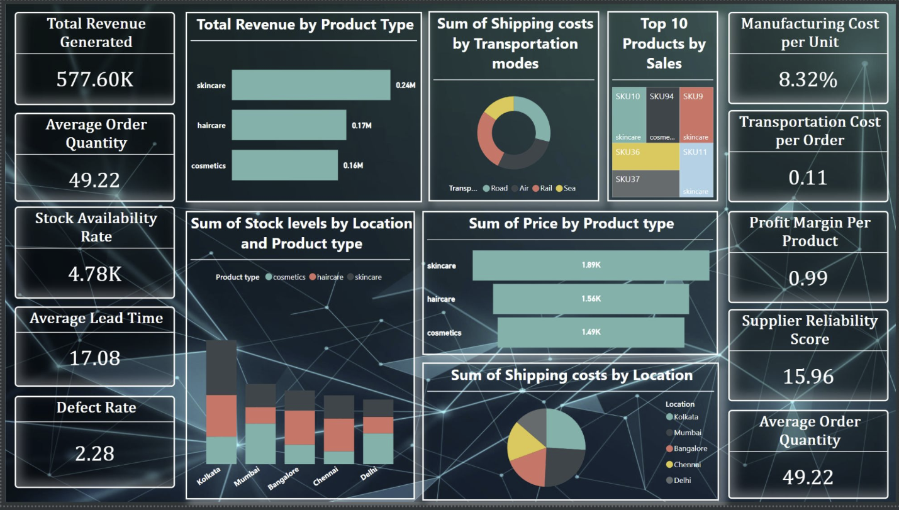
Power BI Dashboard - Warehouse
𝗔𝗻𝗼𝘁𝗵𝗲𝗿 𝗣𝗼𝘄𝗲𝗿 𝗕𝗜 𝗗𝗮𝘀𝗵𝗯𝗼𝗮𝗿𝗱 𝗶𝗻 𝗺𝘆 𝗯𝘂𝗰𝗸𝗲𝘁 𝗹𝗶𝘀𝘁! I've been diving deep into supply chain analytics, and here's a dashboard I created to analyze key metrics for a Fashion & Beauty startup's product supply chain. 𝗙𝗿𝗼𝗺 𝘁𝗿𝗮𝗰𝗸𝗶𝗻𝗴 𝘁𝗼𝘁𝗮𝗹 𝗿𝗲𝘃𝗲𝗻𝘂𝗲, 𝗹𝗲𝗮𝗱 𝘁𝗶𝗺𝗲, 𝗮𝗻𝗱 𝘀𝘁𝗼𝗰𝗸 𝗮𝘃𝗮𝗶𝗹𝗮𝗯𝗶𝗹𝗶𝘁𝘆 𝘁𝗼 𝗮𝗻𝗮𝗹𝘆𝘇𝗶𝗻𝗴 𝘀𝗵𝗶𝗽𝗽𝗶𝗻𝗴 𝗰𝗼𝘀𝘁𝘀 𝗯𝘆 𝗺𝗼𝗱𝗲 𝗮𝗻𝗱 𝗹𝗼𝗰𝗮𝘁𝗶𝗼𝗻....
Github Link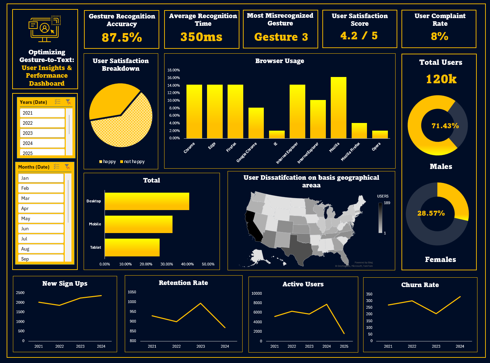
Excel Dashboard - GestureToText
A Gesture-to-Text Performance Dashboard! This dashboard provides key insights into user satisfaction, gesture recognition accuracy, complaint rates, and browser usage, helping refine and optimize the gesture recognition system....
Github Link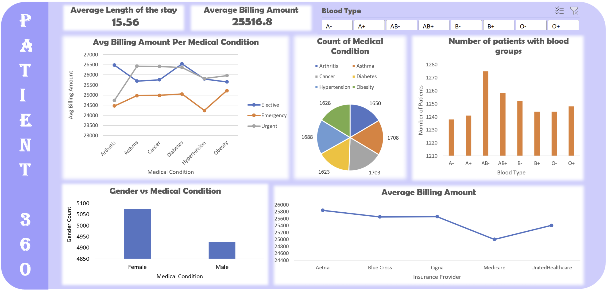
Excel Dashboard - Patient 360
The Patient 360 Analytics Dashboard provides a comprehensive overview of patient data, including medical conditions, billing amounts, blood type distributions, and gender-based insights....
Github Link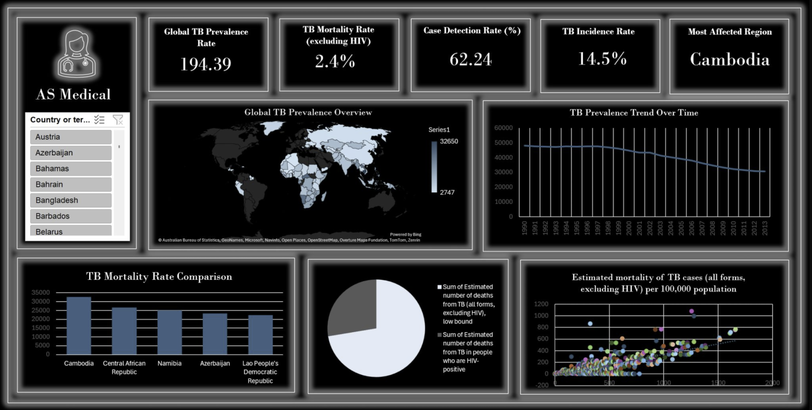
Excel Dashboard - AS Medical
This Tuberculosis (TB) Analytics Dashboard provides a comprehensive visualization of TB prevalence, mortality, and detection trends globally.....
Github Link
Excel Dashboard - BlinkIT Sales
This dashboard provides an in-depth visualization of sales and operational data for Blinkit, a last-minute grocery delivery app in India....
Github Link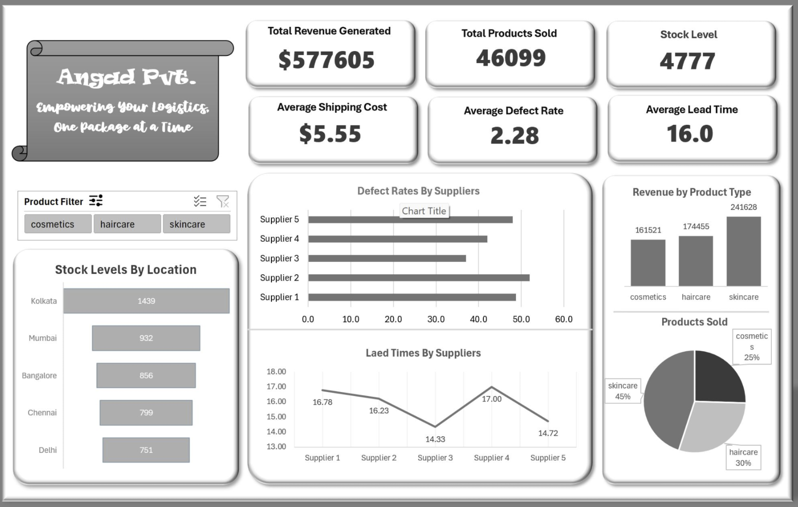
Excel Dashboard - Logistics Performance
This Logistics Performance Dashboard provides key insights into supply chain operations, helping businesses optimize inventory, reduce defects, and enhance revenue tracking....
Github Link
Excel Dashboard - Bank Loan
Developed two interactive dashboards in Excel that are interconnected through dynamic buttons and provide insightful visualizations with real-time interactivity. These dashboards were designed to be user-friendly, intuitive, and visually appealing, with a focus on making data exploration seamless....
Github Link
Excel Dashboard - Pizza Sales
🚀 Pizza Sales Analysis Dashboard Created this dashboard using Excel and SQL to analyze sales trends and performance: Total Revenue: $65,160 Busiest Times: Friday/Saturday evenings Top Sellers: Classic Deluxe & Chicken pizzas Key Insight: Large pizzas drive the most sales!....
Github Link
Excel Dashboard - Coffee Sales
The main objective of this project is to analyze retail sales data for a coffee shop to derive actionable insights that can enhance operational efficiency and improve overall performance. This dashboard was created using Excel, leveraging its visualization and data manipulation tools to provide answers to key business questions....
Github Link
Excel Dashboard - Bicycle Sales
The Bicycle Shop Sales Dashboard provides a comprehensive overview of the business performance, offering valuable insights into key metrics and trends. Built using Excel, this dynamic dashboard includes the following features:
Github Link
Power BI Project - Call Center
Created a dashboard in Power BI for Claire that reflects all relevant Key Performance Indicators (KPIs) and metrics in the dataset. Get creative! Possible KPIs include (to get you started, but not limited to): 📌 Overall customer satisfaction 📌Overall calls answered/abandoned 📌Calls by time 📌Average speed of answer 📌Agent’s performance quadrant -> average handle time (talk duration) vs calls answered
Github Link
Tableau Dashboard - Covid-19 India
This Tableau dashboard provides a detailed analysis of Covid-19 trends in India, offering valuable insights into key metrics: d Trends Over Time: A steady rise in confirmed cases is visible post-July 2020, with recovery rates aligning closely with the confirmed trends, showcasing the effectiveness of interventions......
Tableau Link Github Link
Tableau Dashboard - Emergency Healthcare
This project analyzes the relationship between wait time and patient satisfaction in emergency care using data visualization techniques in Tableau. The goal is to understand whether reducing wait times directly improves patient experience or if other factors play a larger role.
Tableau Link Github Link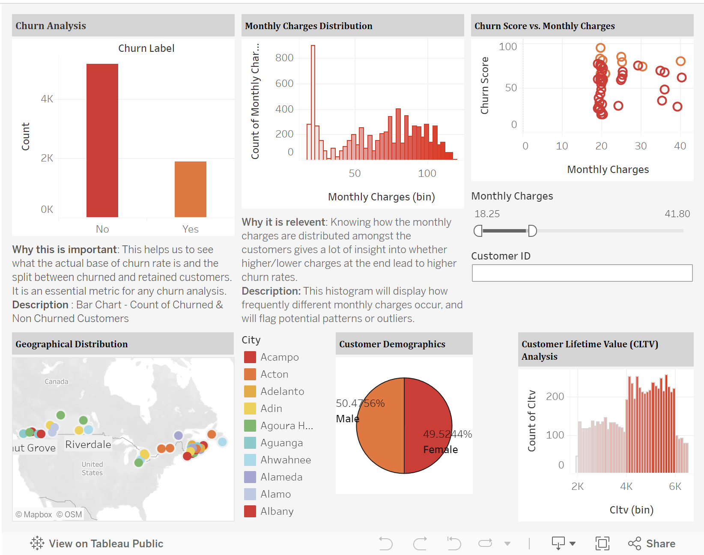
Tableau Project {Churn Analysis}
The distribution of monthly charges includes a clear affect on customer churn, with a significant churn rate observed around the $200 monthly charge point. This suggests that clients may discover the value at this price point to be insufficient
Github Link
Javascript Projects
In this repository, I target for 100+ Javascript mini Projects. In this repository, you'll find: Snippets of code that showcase JavaScript's versatility. Mini-projects that illustrate real-world applications.
Github LinkTableau Project {Churn Analysis}
The distribution of monthly charges includes a clear affect on customer churn, with a significant churn rate observed around the $200 monthly charge point. This suggests that clients may discover the value at this price point to be insufficient
Github Link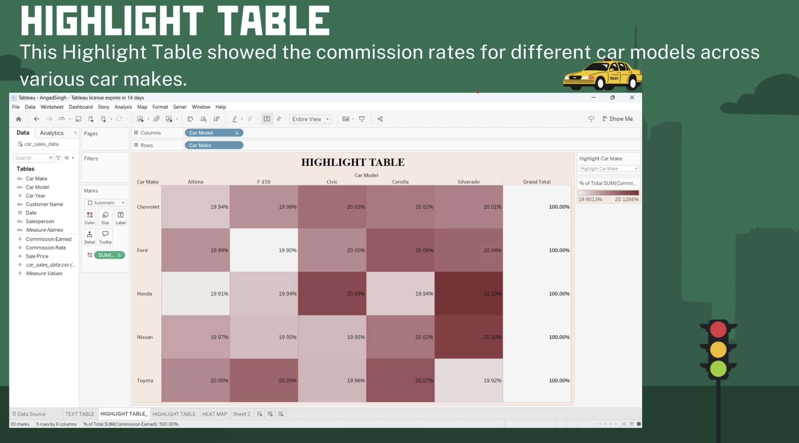
Tableau Project {Car Sales}
I've explored the car sales dataset using Tableau. In this project, I utilized Text Tables, Highlight Tables, and Heat Maps to bring the data to life. Each visualization is accompanied by comprehensive descriptive, diagnostic, and prescriptive analyses that delve into the data's narrative and offer actionable insights.
Github Link
Tableau Project {Agriculture Dataset}
I completed my new project of Tableau using three visual elements (Filled Map, Dual Line Chart, Scatter PLot). See my presentation below in which I used Agriculture dataset of India and also explaining the trends and analysis of a particular visualization. ThankYou !.
Github Link
Machine Learning Project{Behavioral Segmentation}
I find a real-world application of the K-Means Clustering which is a Behavioral Segmentation of customers in which I explain everything in my attached presentation that how k-means clustering works , dataset chosen and so-on. I invite you to check out the project details and share your thoughts! Your feedback and insights are always appreciated.
Github Link
Machine Learning Project {Breast Cancer Prediction}
I am sharing my new project of Machine learning. In which I find a real-world application/use of KNN and Illustrate the the idea of the algorithm by using the example. The real world application is Breast Cancer Prediction Using K-Nearest Neighbors (KNN) , go through my project as I explained KNN in my first few slides and then the application.
Github Link
R Project { Canadian Tyres Sales}
Today, I am sharing my project, which includes different visualizations—both static and interactive. For the static visualizations, I used the R language along with the RStudio platform, and for the interactive ones, I used various online websites. Please go through my attached presentation below. Any feedback or suggestions are appreciated.
Github LinkSQL Project {Pizza Sales}
Completed a SQL Project for Data Analysis on Pizza Sales in which I using the dataset of pizza shop, to solve several questions related to pizza sales, I attached my presentation below, in which I added screenshots of code along with their output, Would love to hear your thoughts or experiences with similar projects !! Thanks to WsCube TechAyushi Jain
Github Link
R Project{Cricket Dataset}
Just completed a project analyzing the Cricket Dataset using R , In which I tried to find the MIN, MAX , MEAN, MODE, PERCENTILES, MEDIAN, COVARIANCE , CORELATION for those columns which contain numeric values. I added screenshots of code, along with the output, in the presentation. Would love to hear your thoughts or experiences with similar projects!
Github Link
Power Bi Project {Ecommerce Sales}
Excited to share my first Power BI project! 🚀 I had a fantastic time diving into data visualization and analysis, and I'm thrilled with the results. Looking forward to sharing more insights soon! hashtag#PowerBI hashtag#DataVisualization hashtag#Analytics"
Github Link
React Project {Swiggy Web App Clone}.
Following are the features which I add in the project with the particular concept i used: I used the Realtime Swiggy Api for high-performant application and to avoid CORS Error. Lazy Loading for App Optimization (When you click on the particular product(food) for more description then by this it cannot load the whole content insantly). Simmer UI Integration for better UI exprience (Library => react-shimmer-effects).
Github Link
IOT Project {Home Automation}
Hello, I want to share with you all , My first IOT project which HOME AUTOMATION, in this you can operate any appliances of your home from mobile from any corner of world using internet and I also add a gas sensor which will detects any LPG gas leakage at your home and immediately gives alarm on your mobile.
Github Link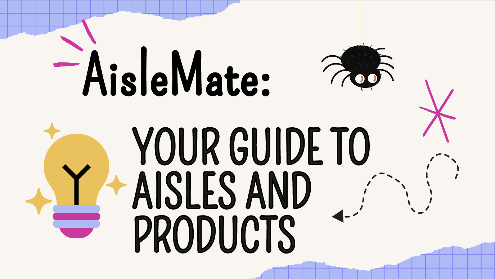
Aislemate {Project Management}
To develop a mobile application that helps shoppers easily navigate shopping malls, locate specific stores, and search for products within those stores, providing real-time aisle-level navigation....
Github Link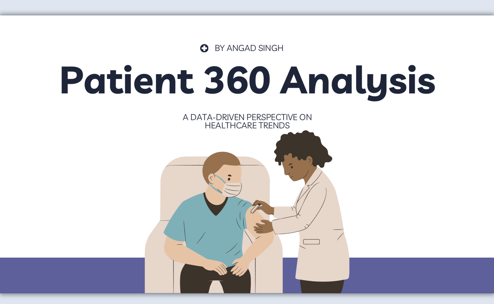